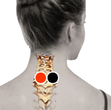

Insomnio
Pares
cérvico - cérvico

Generalidades:
Es la dificultad para mantener un patrón estable de sueño, que en adultos es alrededor de 8 horas diarias. Si la persona tiene dificultad para iniciar el sueño se se llama insomnio inicial. Si ocurre que la persona se despierta en la madrugada y ya no puede conciliar el sueño se llama insomnio terminal. También puede ocurrir a media noche. Esta afección puede deberse a múltiples factores emocionales, como depresión, estrés, preocupación. O bien a consumo de sustancias como la cafeína o anticonceptivos. Malos hábitos como horarios irregulares de sueño.
Se llama insomnio crónico cuando la condición permanece durante más de 6 meses. Esta condición puede deteriorar la salud del cuerpo, así como mermar las capacidades intelectuales como memoria, atención, coordianción, etc. Esto puede ser una causa de accidentes, por no mencionar la alteración del estado de ánimo: irritabilidad, depresión, angustia, debilitamiento del sistema inmune, mayor estrés (círculo vicioso).
El biomagnetismo ha encontrado diversos pares relacionados con este trastorno: